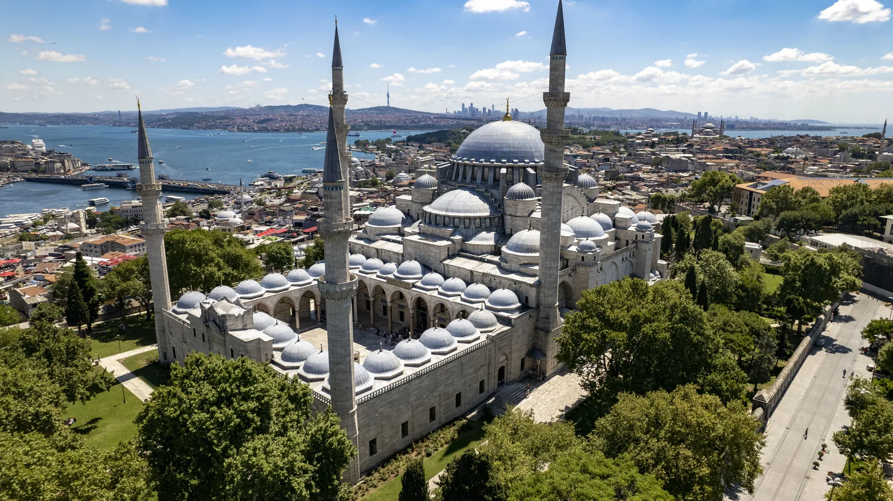
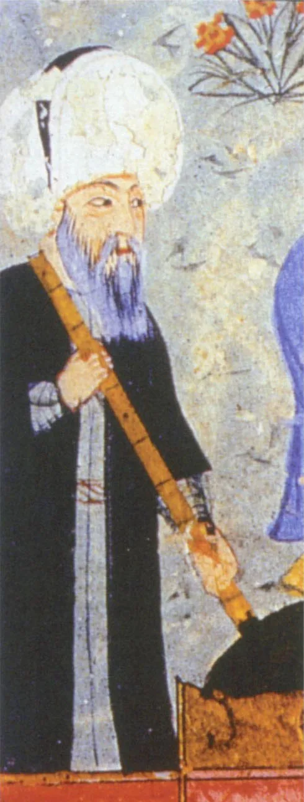
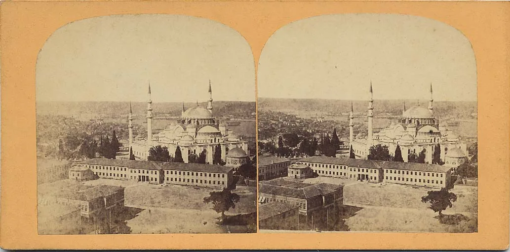
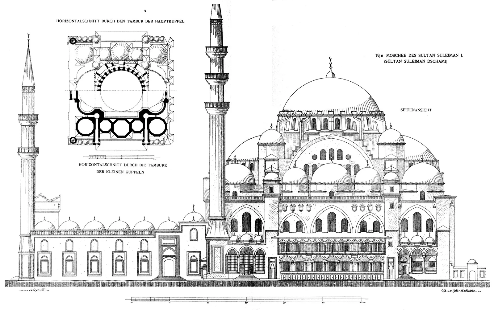
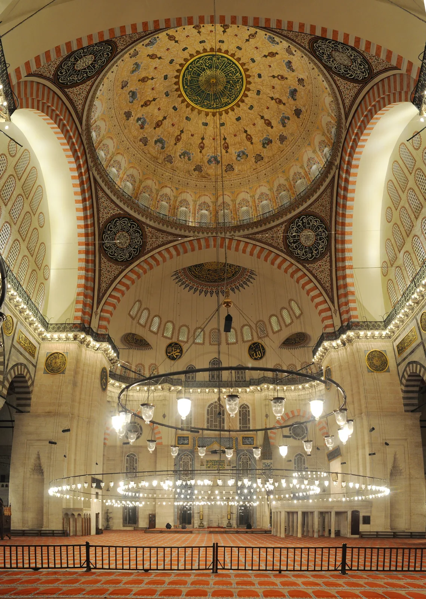
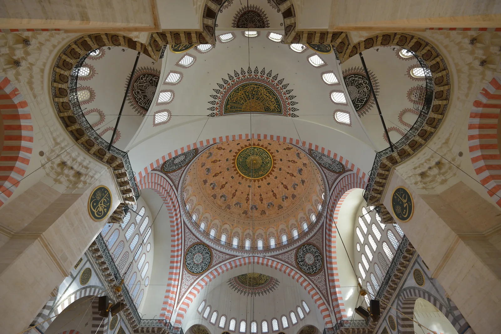
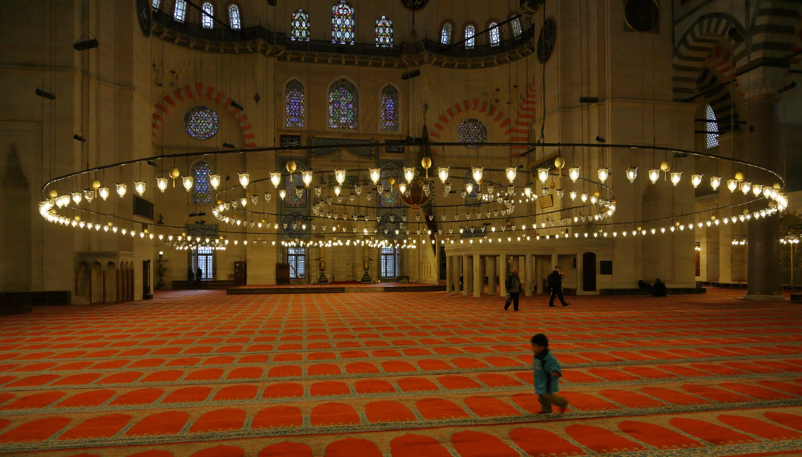
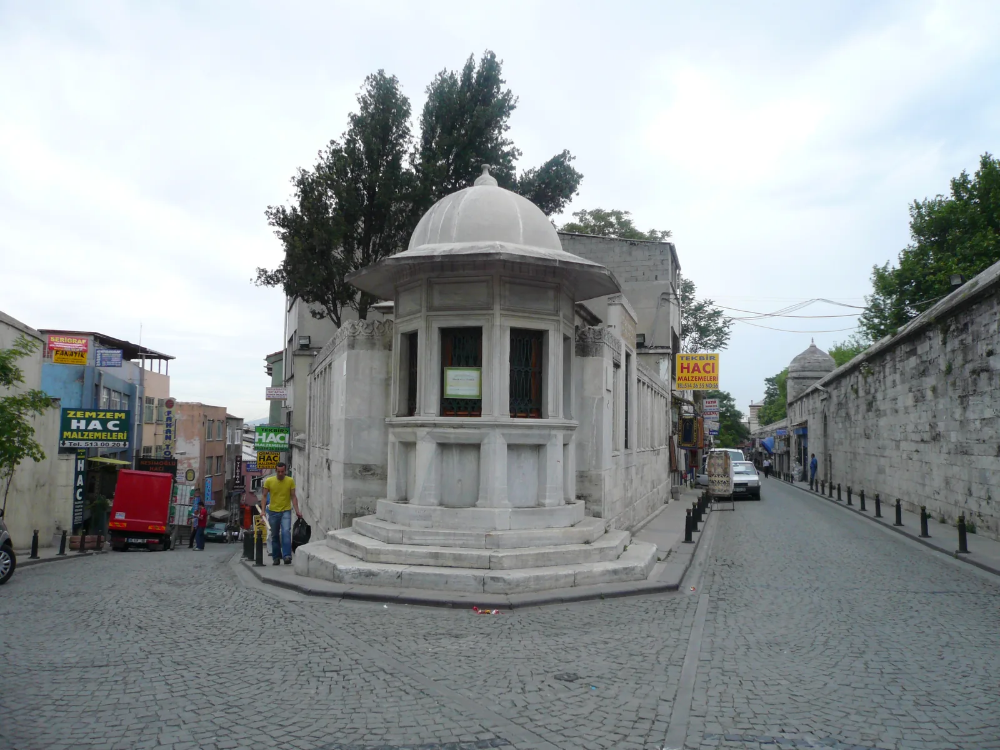

Mimar Sinan, 16. yüzyılda Osmanlı sarayının Hassa mimarbaşısı olarak yaklaşık yarım yüzyıl görev yapan, askerî teşkilat içinde yetişmiş mimar ve yapı yöneticisidir. Kayseri çevresinden devşirilerek Osmanlı hizmetine girdi; uzun askerlik yıllarının ardından 1538’de mimarbaşı oldu ve 1588’deki ölümüne kadar imparatorluğun büyük yapı faaliyetlerinin başında kaldı.
Onun adı bugün en çok Süleymaniye ve Selimiye ile anılıyor. Fakat Sinan’ı yalnız kubbe tasarlayan olağanüstü yetenekli bir birey olarak düşünmek, 16. yüzyıl Osmanlı mimarlığının nasıl çalıştığını eksik bırakır. Mimarbaşı; sarayın yapı teşkilatını, kalfaları ve ustaları, malzeme sevkiyatını, keşifleri, onarımları ve farklı şehirlerde yürütülen şantiyeleri yöneten kişiydi. Süleymaniye de tek bir insanın elinden çıkmış nesne değil; Kanuni Sultan Süleyman’ın baniliği, vakıf düzeni, Hassa Mimarlar Ocağı, taşçılar, marangozlar, nakkaşlar, hattatlar ve geniş bir tedarik ağının ortak ürünüydü.
“Süleymaniye’nin sırları” denildiğinde tarih ile internet efsanesi birbirine kolayca karışıyor. Caminin kubbesinde akustiğe katkı sağlayan boş küpler ve girişin üzerinde is toplayan özel bir bölüm gerçekten vardır. Buna karşılık yapının depremde raylar üzerinde hareket ettiği, Sinan’ın kubbeyi nargile içerek test ettiği veya caminin altında saraya uzanan gizli kaçış tünelleri bulunduğu gibi iddialar aynı kanıt düzeyinde değildir. Süleymaniye’nin gerçek mühendisliği, ona sonradan eklenen hikâyelerden zaten daha ilginçtir.
Mimar Sinan Kimdir?
Sinan’ın hayatını ayrıntılı biçimde anlatan en önemli metin, şair ve nakkaş Sâî Mustafa Çelebi’nin 1580’lerin sonlarına doğru kaleme aldığı Tezkiretü’l-Bünyân’dır. Eserin önemi büyüktür; çünkü anlatının önemli bölümü Sinan’ın kendi hatıralarına dayanır. Tezkiretü’l-Ebniye ise hayatına ve eserlerine ilişkin başka bilgiler verir ve uzun bir yapı listesi içerir. Fakat iki eserdeki yapı listeleri bütünüyle aynı değildir. Bu bile “Sinan’ın yaptığı eser sayısı” gibi görünen basit bir sorunun neden tek rakamla çözülemediğini gösterir.
Bu biyografiler modern özgeçmiş değildir. Sinan’ın hayatının son yıllarında, onun mesleki itibarını ve eserlerini gelecek kuşaklara aktarmak amacıyla oluşturulmuş edebî metinlerdir. Sinan’ın kendi sesini taşımaları onları çok değerli kılar; fakat anlatılan her anekdotun bağımsız arşiv belgesiyle doğrulandığı anlamına gelmez. Özellikle kahramanlık, hükümdarla diyalog ve mesleki üstünlük anlatılarında bu niteliği göz önünde tutmak gerekir.
Sinan’ın doğum yılı kesin değildir. Yaşına ilişkin geç dönem hesapları ve biyografik veriler onu 15. yüzyılın sonlarına yerleştirir; modern yayınlarda 1489/1490 civarı sıkça verilir. Fakat bu tarihi nüfus kaydında yazılı kesin doğum günü gibi sunmak doğru değildir. Buna karşılık Kayseri sancağıyla bağlantısı ve Ağırnas kökeni, kendi anlatısı ve daha sonraki belgelerle çok daha sağlam zemindedir.
Sinan’ın devşirme öncesi adı konusunda da popüler içeriklerde gereğinden fazla kesinlik vardır. Joseph, Christodoulos ve başka isimler ileri sürülmüş, bunlar zamanla birbirini tekrar eden biyografik bilgiye dönüşmüştür. Güvenilir bir çağdaş belge doğum adını kesin biçimde vermediğinden “Sinan’ın gerçek adı şuydu” diye hüküm vermek mümkün değildir. Osmanlı hizmetinde Sinan adıyla tanındığı ise tartışmasızdır.

Ağırnas’tan İstanbul’a: Mimar Sinan Türk mü, Ermeni mi, Rum mu?
Sinan’ın etnik kökeni, onun mimarlığından daha sert tartışmalar doğurabilen konulardan biridir. Güvenle söylenebilecek başlangıç noktası şudur: Sinan, Kayseri sancağından devşirme sistemi içinde Osmanlı hizmetine alınmış Hristiyan bir ailenin çocuğuydu. Kendi biyografisinde Yavuz Sultan Selim’in devşirmesi olduğunu belirtir. Kayseri’deki akrabalarıyla daha sonraki ilişkilerine dair belgeler de bölgeyle bağını destekler.
Buradan ailesinin etnik kimliğine geçildiğinde kesinlik azalır. Ermeni kökenli olduğu, Rum-Ortodoks çevreden geldiği veya farklı bir Anadolu Hristiyan topluluğuna mensup bulunduğu yönünde görüşler vardır. Devşirme öncesi dinî aidiyetin bilinmesi, modern anlamda etnik veya ulusal kimliği otomatik olarak belirlemez. 15. ve 16. yüzyıl Orta Anadolu’sunun dil, din ve topluluk yapısını bugünün ulus kategorileriyle bire bir eşleştirmek özellikle sorunludur.
Bu yüzden “Mimar Sinan Türk mü, Ermeni mi?” sorusuna verilebilecek tarihsel açıdan en sağlam cevap, ailesinin etnik kimliğinin kesin biçimde belgelenmediğidir. “Kesin Türk’tü”, “kesin Ermeni’ydi” veya “kesin Rum’du” biçimindeki hükümler eldeki kanıtların taşıyabileceğinden daha güçlüdür. Onun Hristiyan bir aileden devşirildiği ve Osmanlı kurumları içinde yetişerek Müslüman Osmanlı devlet görevlisi olduğu daha sağlam bilgidir.
Köken tartışmasının mimarlık tarihini gölgelemesinin başka bir sakıncası da vardır. Sinan’ın mesleki dünyası Kayseri’deki çocukluk çevresinden İstanbul’daki saray teşkilatına, Balkanlardan Irak’a uzanan sefer güzergâhlarına ve imparatorluğun farklı bölgelerinden gelen zanaatkârlara kadar genişledi. Yapılarındaki biçimleri tek bir etnik kökene bağlamak bu çok katmanlı üretim ortamını açıklamaz.
Devşirme sistemi de “köyden alındı ve doğrudan mimar oldu” biçiminde işlemiyordu. Saray ve askerî teşkilat için insan kaynağı sağlayan sistemde alınan çocuk ve gençler eğitimden geçiriliyor, yetenek ve ihtiyaçlara göre farklı görevlere yönlendiriliyordu. Sinan’ın mesleki oluşumunda belirleyici olan dönem, Osmanlı askerî teşkilatı içindeki uzun hizmet yıllarıydı.
Askerî Mühendislikten Hassa Mimarbaşılığına
Sinan’ın kendi anlatısına göre devşirildikten sonra Acemi Ocağı çevresinde yetişti ve yeniçeri teşkilatı içinde çeşitli görevler üstlendi. Yavuz Sultan Selim ve Kanuni Sultan Süleyman dönemlerindeki seferlere katılması, onu imparatorluğun çok farklı coğrafyalarıyla karşılaştırdı. Belgrad, Rodos, Mohaç, Irakeyn, Korfu ve Boğdan seferleri biyografik kaynaklarda onun askerlik yıllarıyla ilişkilendirilir.
Bu seferleri bir “mimarlık üniversitesi” gibi romantikleştirmek gereksizdir. Fakat askerî hareketliliğin Sinan’a yapı ve altyapı konusunda geniş bir gözlem alanı sağladığını düşünmek makuldür. Ordunun nehir geçmesi için köprü, konaklama için geçici yapılar, kuşatma için istihkâm ve yol düzenlemeleri gerekiyordu. Bir askerî teknisyenin malzemenin hızla temini, iş gücünün örgütlenmesi ve yapının belirli sürede tamamlanması gibi problemlerle karşılaşması kaçınılmazdı.
Sinan’ın mesleki yükselişinde en çok anlatılan olay 1538 Boğdan seferindeki Prut köprüsüdür. Ordunun nehri geçebilmesi için kısa sürede sağlam bir ahşap köprü kurulması gerekiyordu. Kaynak geleneğinde Sinan’ın bu işi başarıyla tamamlaması öne çıkar ve mimarbaşılığa yükselişiyle ilişkilendirilir. Köprünün teknik ayrıntıları hakkında sonradan üretilmiş abartılı tasvirlerden kaçınmak gerekir; önemli olan, askerî yapı tecrübesinin saray mimarlığına geçişinde görünür hâle gelmesidir.
1538’de Acem Ali’nin ardından Hassa mimarbaşılığına getirildi. Bu makam bugünkü anlamda yalnız “baş tasarımcı” değildi. Saraya bağlı mimarlık teşkilatının başındaki kişi; yeni yapıların planlanması, mevcut yapıların onarımı, keşiflerin yapılması, malzeme ve ustaların örgütlenmesi, su yolları ve köprüler gibi altyapı işlerinin denetlenmesiyle uğraşıyordu. İstanbul dışındaki önemli yapı faaliyetlerinde de merkezî teşkilatın gözetimi söz konusuydu.
Sinan’ın uzun ömrü bu görevde olağanüstü süreklilik sağladı. Kanuni döneminde mimarbaşı oldu; II. Selim ve III. Murad dönemlerinde de görevini sürdürdü. Yaklaşık yarım yüzyıllık bu süre boyunca yalnız kendi mimari dilini geliştirmedi, Hassa Mimarlar Ocağı’nın sonraki kuşaklarını etkileyen kurumsal gelenek bıraktı.
Mimar Sinan Tek Başına mı Çalışıyordu?
Sinan hakkında popüler anlatının en yanıltıcı taraflarından biri, büyük camileri sanki tek kişinin zihninde hesaplayıp kendi elleriyle inşa ettiği izlenimidir. Sinan’ın tasarım kararlarındaki ve şantiyelerin yönetimindeki rolünü küçültmeden, Osmanlı yapı üretiminin kolektif niteliğini görmek gerekir.
Hassa Mimarlar Ocağı saraya bağlı profesyonel teşkilattı. Mimarlar ve kalfalar yanında taşçı, duvarcı, marangoz, kurşuncu, sıvacı, nakkaş ve farklı uzmanlık grupları şantiyelerde çalışıyordu. Büyük projeler için İstanbul’daki iş gücü yetmediğinde imparatorluğun farklı bölgelerinden ustalar getirilebiliyordu. Hristiyan zanaatkârların da bu üretim sisteminin içinde bulunması olağandı.
Süleymaniye’nin inşaat defterleri bu dünyayı soyut olmaktan çıkarır. Ömer Lütfi Barkan’ın yayımladığı hesaplar, ücretlerden malzeme alımlarına ve iş gücünün bileşimine kadar büyük şantiyenin ekonomik organizasyonunu izlemeyi mümkün kılar. Taşın çıkarılması ve taşınması, kerestenin bulunması, kurşun, demir ve tuğlanın temini, sütunların nakli ve yüzlerce çalışanın ücretlendirilmesi tasarım kadar büyük yönetim problemiydi.
Malzeme ağı İstanbul sınırlarının ötesine uzanıyordu. Yeni taş ocaklarından malzeme çıkarıldığı gibi daha eski yapılardan devşirilmiş sütun ve mimari parçalar da kullanılabiliyordu. Bu, antik malzemeye mistik anlam yükleyen modern hikâyelerden önce ekonomik ve teknik uygulamaydı. Büyük boyutlu sütunun doğru yerde bulunması, sökülmesi, deniz veya kara yoluyla İstanbul’a getirilmesi ve şantiyede yeniden kullanılabilmesi başlı başına lojistik işti.
Vakıf sistemi külliyenin yalnız inşa edilmesini değil, tamamlandıktan sonra işlemesini sağlayan mali çerçeveyi kuruyordu. Medreselerde görev yapanlardan imarette yemek dağıtanlara, yapıların bakımından farklı hizmetlere kadar süreklilik vakıf gelirlerine dayanıyordu. Böylece mimarlık taş ve kubbeden ibaret kalmıyor; ekonomik kurumla birlikte işliyordu.
Sinan’ın asıl gücünü burada daha iyi görmek mümkündür. Büyük ölçekli yapı programını tutarlı mimari dile dönüştürmek, farklı uzmanları aynı şantiyede koordine etmek ve imparatorluk kaynaklarını yapı üretimine çevirmek mimarbaşının işinin parçasıydı. “Her ayrıntıyı tek başına yaptı” demek onu büyütmekten çok, yönettiği sistemin karmaşıklığını küçültür.

Mimar Sinan’ın Eserleri ve Değişen Mimari Dili
Sinan’ın kariyerini yalnız Süleymaniye ve Selimiye üzerinden okumak, onlarca yıllık deneyimin önemli bölümünü kaybettirir. Cami ve mescitlerin yanında medreseler, türbeler, imaretler, darüşşifalar, hamamlar, köprüler, su kemerleri, saray bölümleri, mahzenler ve başka yapılar onun adıyla ilişkilendirilir.
İstanbul’daki Haseki Külliyesi erken dönem eserleri arasında yer alır. Şehzade Camii ise büyük selâtin camisi ölçeğinde kubbe düzeni ve dış kütle kompozisyonuyla yeni aşamayı temsil eder. Sinan daha sonra Süleymaniye’de farklı plan ilişkisine yönelmiş, Edirne Selimiye’de merkezi kubbenin mekâna egemenliğini çok daha ileri taşımıştır. Bu değişim onun tek formülü tekrar eden mimar olmadığını gösterir.
Sinan’ın mimarlığında kubbe önemli olsa da mesele yalnız “daha büyük kubbe” değildir. Taşıyıcıların iç mekânda nasıl algılandığı, payandaların dış kütle içinde nasıl eritildiği, pencerelerin ışığı nasıl dağıttığı, avlu ile harim arasındaki oran ve yapının şehir içindeki görünüşü birlikte ele alınır. Selimiye’nin mimari çözümü Süleymaniye’nin büyütülmüş biçimi değildir; başka bir mekân problemi için başka çözümdür.
Bu nedenle “Selimiye mi, Süleymaniye mi daha önemli?” sorusunun tek ölçütü yoktur. Selimiye, Sinan’ın merkezî kubbe arayışının en yoğun sonucu ve kendi mesleki anlatısında ustalıkla ilişkilendirilen yapıdır. Süleymaniye ise İstanbul’un topografyası, külliye programı, Kanuni’nin imparatorluk temsili ve şehrin siluetiyle kurduğu ilişki bakımından çok daha geniş ölçekte okunması gereken projedir.
Süleymaniye Camii Neden Yapıldı?
Kanuni Sultan Süleyman’ın kendi adına yaptırdığı Süleymaniye, bir selâtin camisinden daha geniş programla tasarlandı. 16. yüzyıl ortasında Osmanlı İmparatorluğu askerî, siyasi ve ekonomik bakımdan en güçlü dönemlerinden birini yaşıyordu. Hükümdarın adına kurulan büyük külliye, ibadetin yanında eğitim, sağlık, iaşe ve hayır hizmetlerini örgütlüyor; aynı zamanda hanedan baniliğini İstanbul’un en görünür noktalarından birine yerleştiriyordu.
Yer seçimi bu nedenle önemlidir. Külliye, tarihî yarımadanın Haliç’e hâkim üçüncü tepesi üzerinde, bugünkü şehir siluetinin de temel odaklarından birini oluşturacak biçimde konumlandı. Sinan burada düz araziye tek yapı yerleştirmedi. Eğimli topografyayı teraslarla düzenleyerek farklı işlevlerdeki yapıları cami çevresinde bir araya getirdi.
Caminin Haliç yönünden görünüşünde ana kubbe, yarım kubbeler, küçük kubbeler ve minareler kademeli yükseliş oluşturur. Bu etki yalnız cephe süslemesiyle değil, yapı kütlelerinin topografya üzerinde sıralanmasıyla sağlanır. Süleymaniye’nin İstanbul siluetindeki gücü tek kubbenin büyüklüğünden çok bütün parçaların tepeyle birlikte okunabilmesinden kaynaklanır.
Külliyenin eğitim programı özellikle kapsamlıydı. Farklı derecelerde medreseler, darülhadis ve tıp eğitimiyle bağlantılı birimler burada bulunuyordu. Darüşşifa sağlık hizmeti veriyor; imaret ve darüzziyafe yemek ve ağırlama işlevlerini üstleniyor; tabhane yolcular ve misafirlerle ilişkili hizmet sağlıyordu. Hamam, dükkânlar ve diğer ekonomik birimler vakıf sisteminin parçasıydı.
Bu nedenle Süleymaniye’yi yalnız caminin iç mekân fotoğrafları üzerinden okumak projenin yarısını görmektir. Külliye; ibadet, eğitim, sağlık, beslenme, konaklama ve ekonomik sürekliliği aynı şehir parçasında birleştiren kurumlar bütünüydü.
Süleymaniye Külliyesi Nasıl İnşa Edildi?
Süleymaniye’nin inşaatı 1550’de başladı ve cami 1557’de tamamlandı. Yaklaşık yedi yıllık süreç, Osmanlı mimarlık tarihi için olağanüstü ayrıntıda belgelenmiştir. İnşaat hesaplarının günümüze ulaşması sayesinde işçilerin kökenlerinden ücretlere, malzeme sevkiyatından belirli şantiye aşamalarına kadar birçok konu izlenebilir.
Temel atma ve açılış için kaynaklarda hicrî takvimden miladî takvime çevrilen günler nedeniyle küçük tarih farklılıklarıyla karşılaşılabilir. Bu yüzden tek bir günün etrafında gereksiz kesinlik üretmek yerine 1550-1557 inşaat aralığı ve 1557’de ibadete açılması daha sağlam çerçevedir. Külliyenin bazı yardımcı yapılarındaki işlerin ana caminin açılışından sonra sürmüş olması da mümkündür.
Şantiyede çalışanlar tek etnik veya dinî gruptan oluşmuyordu. İmparatorluğun farklı bölgelerinden Müslüman ve Hristiyan ustalar, uzman zanaatkârlar ve işçiler büyük yapı organizasyonuna katıldı. Bu durum Sinan mimarlığının “tek milletin gizli tekniği” gibi anlatılmasının tarihsel gerçeklikle neden uyuşmadığını gösterir.
Taş ve mermer farklı kaynaklardan getirildi. Yeni çıkarılan yapı taşları yanında Bizans ve Roma döneminden kalmış yapılardan alınan büyük sütun ve mimari parçaların yeniden kullanılması da dönemin bilinen uygulamalarındandı. Devşirme malzemenin varlığı, yapının antik bir tapınağın gizli enerjisi üzerine kurulduğu gibi modern yorumlara kanıt değildir; değerli ve büyük boyutlu yapı malzemesinin yeniden kullanımı somut ekonomik ve lojistik gerekçelere sahipti.
Süleymaniye’nin büyüklüğü yalnız harcanan malzemede değil, şantiyenin düzeninde görülür. Taş ocakları, nakliye araçları, deniz taşımacılığı, ücretler, iş takvimi ve farklı ustalıkların birbirine bağlanması gerekiyordu. Bu açıdan inşaat defterleri Sinan’ın mimarbaşlığının tasarımla birlikte organizasyon yeteneğine dayandığını gösteren en güçlü kanıtlardandır.

Süleymaniye’nin Mimarisi Neden Farklıdır?
Caminin merkezinde yaklaşık 27,4 metre çapındaki ana kubbe bulunur. Kubbenin döşemeden kilit noktasına yüksekliği 50 metreyi biraz aşar. Ana kubbe iki büyük yarım kubbeyle doğu-batı doğrultusunda genişletilir; daha küçük örtü elemanları bu sistemi çevreleyerek harimin büyük bölümünü görsel olarak birleşmiş hacme dönüştürür.
Kubbenin yükü dört büyük taşıyıcıya aktarılır. Halk arasında “fil ayağı” diye anılan güçlü payeler, büyük kemerlerle kubbe sistemini taşır. Açılma kuvvetleri dıştaki payandalar ve destek düzeniyle karşılanır. Sinan’ın başarısı taşıyıcıları yok etmek değil, zorunlu strüktürü mimari kompozisyonun parçası hâline getirmektir.
Duvarların taşıyıcı görevinin azaltılması çok sayıda pencereye imkân verir. Alt seviyelerden kubbe kasnağına kadar açılan pencereler iç mekânın gün içinde farklı yönlerden ışık almasını sağlar. Renkli camlı revzenler ve özellikle mihrap çevresindeki İznik çinileri bu aydınlık mekâna kontrollü renk ekler. Süsleme bütün yüzeyleri kaplamak yerine belirli odaklarda yoğunlaşır.
Dışarıdan bakıldığında payandaların ve ağırlık kulelerinin kütle içinde eritilmesi, kubbelerin kademelenmesi ve minarelerin farklı yüksekliklerde yerleştirilmesi önemlidir. Camiye bitişik iki minare üçer şerefeli ve daha yüksek, avlunun dış köşelerindeki iki minare ise ikişer şerefeli ve daha alçaktır. Böylece minareler yalnız düşey işaretler değil, avludan ana kubbeye yükselen kompozisyonun parçalarıdır.
Avlu, harimin önünde bağımsız boşluk gibi durmaz; revak, minare ve korkuluk düzeniyle ana kütleye bağlanır. Ortadaki şadırvan/fıskiyeli havuz ve çevredeki sütunlu revak iç mekâna geçişi kademelendirir. Mihrap ekseni ise harim, hazire ve külliyenin diğer unsurlarıyla ilişkili daha geniş düzenin parçasıdır.
Külliyenin eğimli araziye yerleştirilmesi de teknik ve şehircilik başarısıdır. Teraslar sayesinde farklı kotlarda yeni kullanım alanları oluşturulmuş, bazı yapıların alt katları kervansaray ve hizmet mekânlarına dönüştürülmüştür. Sinan topografyayı ortadan kaldırmak yerine mimari programın içine almıştır.

Ayasofya ile Süleymaniye Arasındaki İlişki
Süleymaniye’nin ana kubbeyi iki yarım kubbeyle destekleyen düzeni Ayasofya’yı hatırlatır ve Sinan’ın Ayasofya’yı yakından bildiği kuşkusuzdur. Osmanlı mimarları İstanbul’un fethinden sonra Ayasofya’yı yalnız ibadet mekânı olarak kullanmadı; yapının bakımı, onarımı ve strüktürel sorunlarıyla da uğraştı. Sinan’ın daha sonraki yıllarda Ayasofya’nın güçlendirilmesinde görev alması bu ilişkinin somut yönlerinden biridir.
Fakat “Süleymaniye Ayasofya’nın kopyasıdır” cümlesi plan benzerliğini mimari eşitliğe dönüştürür. Osmanlı kubbeli cami geleneği Sinan’dan önce Bursa, Edirne ve İstanbul’da farklı plan tipleri geliştirmişti. Sinan’ın kendi Şehzade Camii bile dört yarım kubbeli başka bir merkezîleşme denemesiydi. Süleymaniye bu birikimin içinde değerlendirilmelidir.
İki yapının mekânsal karakteri aynı değildir. Ayasofya’nın 6. yüzyıl strüktürü, galerileri, taşıyıcı sistemi ve bazilikal mirası başka tarihsel bağlama aittir. Süleymaniye’de yan galeriler, payandaların düzenlenişi, avlu, minareler ve külliye ilişkisi Osmanlı selâtin camisi geleneğinin parçalarıdır. Sinan benzer kubbe problemine başka yapı sistemi ve şehir programı içinde cevap verir.
Ters yöndeki “Sinan Ayasofya’yı geçti” söylemi de mimarlık tarihini yarışmaya dönüştürür. Kubbe çaplarını karşılaştırıp kazanan belirlemek iki yapının farklı malzeme, dönem ve işlev koşullarını görmezden gelir. Süleymaniye’nin değeri Ayasofya’yı yenmesinde değil, ondan ve Osmanlı geleneğinden bildiği merkezi kubbe sorununu kendi bütünlüğü içinde yeniden kurmasındadır.
Süleymaniye’nin Akustik Sırrı
Süleymaniye’de sesin büyük hacim içinde anlaşılır biçimde yayılması gerçek mimari problemdir. Taş yüzeyler ve kubbeler sesi uzun süre yansıtır; bu, dinî mekânda güçlü işitsel etki yaratabildiği gibi konuşmanın anlaşılmasını zorlaştırabilir. Elektronik ses sistemi bulunmayan 16. yüzyılda imamın, müezzinlerin ve Kur’an okuyucularının sesi mimariyle birlikte düşünülmek zorundaydı.
Kubbe çeperinde ağızları iç mekâna dönük boş seramik küpler bulunduğu tarihî yapı araştırmalarında kaydedilmiştir. TDV İslâm Ansiklopedisi Süleymaniye için 64 küpten söz eder. Benzer uygulamalar başka Osmanlı camilerinde de görülür. Bu nedenle küplerin varlığı modern internet efsanesi değildir.
İşlev konusunda daha dikkatli olmak gerekir. Boş seramik elemanlar kubbe dolgusunun ağırlığını azaltabilir. Ağızları mekâna açılan kap biçimli boşlukların belirli frekanslarda rezonatör gibi davranması fiziksel olarak mümkündür ve tarihî yapılarda “akustik kap” kullanımı daha eski dönemlerden bilinir. Fakat her küpün Sinan tarafından bugünkü akustik mühendisliğindeki kesin frekans hesabıyla ayarlandığını gösteren proje belgesi yoktur.
Bu nedenle “Sinan öyle bir sistem yaptı ki fısıltı caminin her noktasından duyuluyordu” iddiası gereğinden güçlüdür. Büyük camide sesin dağılımı kaynak konumu, doluluk, halı ve diğer yüzeyler, restorasyonlarda kullanılan malzemeler ve modern hoparlörlerin yerleşimi gibi birçok etkene bağlıdır. Günümüzde bir noktada oluşan yankı veya ses problemi doğrudan “Sinan’ın akustiği restorasyonda tamamen yok edildi” sonucunu kanıtlamaz.
Modern akustik çalışmalar tarihî camilerin uzun yankılanma sürelerini ve ses dağılımını ölçebilir. Bu araştırmalar yapının doğal akustiğini anlamak için değerlidir; fakat 16. yüzyıldaki özgün yüzeylerin, kandillerin, insan yoğunluğunun ve tekstil elemanlarının tamamı bugünkü durumda aynı değildir. Tarihî akustiği tek ölçümle eksiksiz yeniden kurmak bu nedenle zordur.

İs Odası Gerçekten Nasıl Çalışıyordu?
Süleymaniye’nin en ilgi çekici ayrıntılarından biri “is odası”dır. Elektrik aydınlatmasından önce cami çok sayıda kandille aydınlatılıyordu. Yağ kandillerinden çıkan isin kubbe ve bezemeleri karartması büyük bakım sorunu yaratabilirdi. Yapının hava hareketi, isin belirli yönde taşınmasına yardımcı olacak biçimde kullanılmıştır.
Ana girişin üzerinde yer alan ve is odası olarak bilinen bölüm bu sistemle ilişkilidir. İç mekândaki hava hareketiyle taşınan is parçacıklarının burada birikmesi amaçlanıyordu. Bunu modern fanlı havalandırma veya filtre sistemi gibi düşünmemek gerekir; hareket sıcaklık farkları, açıklıklar ve doğal hava dolaşımıyla oluşan pasif sistemdi.
Toplanan isin mürekkep üretiminde kullanıldığı anlatısı uzun süredir Süleymaniye geleneğinin parçasıdır. İs mürekkebi tarihsel olarak gerçek üretim tekniğidir; karbon esaslı is, bağlayıcılarla karıştırılarak dayanıklı mürekkep elde edilebilir. Dolayısıyla kandil isinin değerlendirilmesi teknik olarak akla uygundur.
Sorun, bu genel bilgiden çıkarılan abartılı cümlelerdir. “Osmanlı’nın bütün fermanları Süleymaniye’nin isiyle yazıldı” veya “Sinan bu odayı özellikle devlet belgeleri için mürekkep fabrikası olarak tasarladı” gibi ifadeler güvenilir belgelerin taşıdığından fazlasını söyler. İs odasının varlığı ve isin toplanması güçlü biçimde desteklenirken, toplanan malzemenin hangi belirli yazmalarda veya fermanlarda kullanıldığı ayrı kanıt gerektirir.

Süleymaniye’de Neden Devekuşu Yumurtaları Vardı?
Osmanlı camilerinin büyük avizelerinde devekuşu yumurtası kullanıldığına ilişkin tarihî örnekler vardır ve Süleymaniye de bu gelenekle anılır. Yumurtaların kandil halkalarına asılması dekoratif ayrıntı olmanın yanında, böcek ve özellikle örümcekleri uzaklaştırdığı düşüncesiyle açıklanmıştır.
Popüler anlatıda mekanizma çoğu zaman kesin bilimsel gerçek gibi sunulur: yumurtanın zamanla yaydığı kokunun örümcekleri uzaklaştırdığı, böylece ağların kandil düzenini kirletmediği söylenir. Geleneksel açıklama budur; fakat bunu modern kontrollü deneylerle kanıtlanmış, etkisi ölçülmüş biyolojik yöntem gibi anlatmak doğru değildir.
Yumurtaların yüzyıllar boyunca kırılması, kaybolması veya yenilenmesi de “bugün görülen her yumurta Sinan’ın astığı orijinal yumurtadır” düşüncesini geçersiz kılar. Tarihî yapının kullanım hayatı durağan değildir. Avizeler, kandiller ve dekoratif parçalar onarım ve bakım süreçlerinde değişiklik görebilir.
Bu ayrıntının değeri zaten mucize olmasında değildir. Büyük ibadet mekânında aydınlatma düzeninin temizliği, bakım ihtiyacı ve böceklenme gibi gündelik sorunların da mimari kullanımın parçası olduğunu hatırlatır. Süleymaniye’yi anlamak yalnız kubbenin statik hesabına değil, yapının yüzyıllar boyunca nasıl işletildiğine de bakmayı gerektirir.
Süleymaniye Depremlere Nasıl Dayandı?
İstanbul deprem riski yüksek bir kenttir ve Süleymaniye 16. yüzyıldan bu yana çok sayıda sarsıntı, yangın ve onarım dönemi geçirdi. Yapının hâlâ ayakta olması ciddi mühendislik başarısıdır. Fakat bu başarıyı “gizli raylı temel” gibi tek mucizeye bağlamak gerçek taşıyıcı sistemin önemini azaltır.
Ana kubbenin yükü büyük kemerler aracılığıyla dört ana payeye aktarılır. Kubbenin ve yarım kubbelerin yatay itmeleri payanda düzeniyle dengelenir. Ağırlık kuleleri ve dış destekler üst yapının kuvvetlerini yönetmeye yardımcı olur. Taş ve tuğlanın farklı yerlerde kullanılması, kemer geometrisi ve kütlelerin kademelenmesi yapının davranışını belirleyen unsurlardır.
Kâgir tarihî yapılarda harç ve duvar örgüsü de önemlidir. Modern betonarme bina gibi tek parça davranmayan taş-tuğla sistemlerde bağlantılar, duvar kalınlıkları ve kemer-kubbe geometrisi yük aktarımını etkiler. Süleymaniye’nin dayanıklılığı yalnız temel altında aranmamalıdır; üst yapı ile destek sisteminin bütünü birlikte çalışır.
Bunun yanında “Süleymaniye hiçbir depremde hasar görmedi” demek yanlıştır. Yapı yüzyıllar boyunca deprem ve yangınlardan etkilenmiş, çeşitli dönemlerde onarım görmüştür. 1766 depremi ve daha sonraki müdahaleler, tarihî anıtların dayanıklılığının bakım ve onarım tarihinden ayrı düşünülemeyeceğini gösterir. Bugün gördüğümüz yapı, 1557’de tamamlanmış ve o günden beri hiç dokunulmamış nesne değildir.
Temelde Raylı Sistem Var mı?
İnternette sık tekrarlanan iddiaya göre Sinan, Süleymaniye’nin temeline demir raylar veya hareketli düzenek yerleştirmiş; bina deprem sırasında bu raylar üzerinde kayarak enerjiyi sönümlemiştir. Bu hikâye bazen modern sismik izolatörlerin 16. yüzyıldaki karşılığı olarak sunulur.
Süleymaniye’nin bilinen mimari ve restorasyon literatüründe böyle raylı temel sistemini doğrulayan güvenilir tarihî belge veya teknik tespit yoktur. Yapının deprem davranışını açıklamak için taşıyıcı sistem, payandalar, kemerler, duvar örgüsü, malzeme ve zemin ilişkisi gibi belgelenebilir unsurlar varken görünmeyen mekanizma icat etmeye gerek yoktur.
Temelin uzun süre bekletildiği, zeminin oturmasının gözlendiği yönündeki anlatılar farklı versiyonlarda dolaşır. Büyük yapıda temel ve zemin hazırlığının önemli olması doğaldır; fakat “Sinan temeli tam X yıl boş bıraktı” gibi kesin rakamlar çağdaş inşaat kayıtlarıyla desteklenmeden kullanılmamalıdır.
Sinan Süleymaniye’de Nargile İçti mi?
Başka hikâyede Kanuni, inşaatın uzadığını duyunca camiye gelir ve Sinan’ı kubbenin altında nargile içerken bulur. Sinan’ın aslında nargilenin fokurtusunu dinleyerek akustiği test ettiği anlaşılır. Hikâye sosyal medyada “Sinan’ın bilimsel yöntemi” diye sıkça anlatılır.
Bu anlatının ciddi kronoloji problemi vardır. Nargilenin Osmanlı dünyasındaki yaygınlaşması Sinan’ın Süleymaniye’yi inşa ettiği dönemle kolayca uyuşmaz; ayrıca çağdaş inşaat kayıtlarında Sinan’ın akustiği nargileyle test ettiğini doğrulayan güvenilir belge bulunmaz. Bu nedenle hoş anekdot olarak dolaşsa da tarihsel gerçek gibi kullanılamaz.
Süleymaniye’nin akustiğini açıklamak için zaten kubbe geometrisi, hacim ve seramik rezonatörler gibi somut mimari unsurlar vardır. Nargile hikâyesi bu gerçek mühendislik problemini masalsı zekâ gösterisine dönüştürür.
Dört Minare ve On Şerefe Neyi Simgeliyor?
Süleymaniye’nin dört minaresi vardır. Camiye yakın iki yüksek minarede üçer, avlunun dış köşelerindeki daha alçak iki minarede ikişer şerefe bulunur; toplam sayı ondur. Yaygın anlatıya göre dört minare Kanuni Sultan Süleyman’ın İstanbul’un fethinden sonraki dördüncü padişah, on şerefe ise Osmanlı hanedanının onuncu hükümdarı olmasını simgeler.
Bu açıklama çok yaygındır, fakat “Sinan’ın tasarım belgesinde sembolün anlamı böyle yazıyor” diyebileceğimiz kanıt yoktur. TDV İslâm Ansiklopedisi de bu yorumu halk söylentisi olarak niteler ve bunun Sinan için ne ifade ettiğinin bilinmediğine dikkat çeker.
Üstelik minarelerin mimari yerleşimi kendi başına işlevsel ve kompozisyonel mantığa sahiptir. Ana kütleye yakın minarelerin daha yüksek ve üç şerefeli, avlu köşelerindekilerin daha alçak tutulması caminin kademeli yükselişini destekler. Minare kaidelerinin yapı kütlesiyle ilişkisi de yalnız sembolik sayı oyununa indirgenemez.
Dolayısıyla “dört ve on sayılarının Kanuni’ye gönderme yaptığı söylenir” demek mümkündür; “Sinan bunları kesinlikle bu şifreyi vermek için yaptı” demek ise kanıt düzeyini aşar.
İran Şahının Mücevherleri Harca mı Karıştırıldı?
Süleymaniye hakkında en renkli hikâyelerden biri Safevî hükümdarı Şah Tahmasb’ın inşaatın uzadığını işitip Kanuni’ye değerli taşlar göndermesidir. Rivayetin farklı versiyonlarında bu armağan, Osmanlı’nın parası yetmediği için inşaatı bitiremediği imasını taşır. Kanuni’nin öfkelendiği, Sinan’a mücevherleri verdiği ve taşların harca karıştırıldığı ya da bir minarenin belirli bölümüne yerleştirildiği anlatılır.
Hikâye Osmanlı anlatı geleneğinde farklı biçimlerde yaşamış, “Cevahir Minaresi” adıyla ilişkilendirilmiştir. Fakat rivayetin edebî ve siyasi niteliği ile arkeolojik kanıtı birbirinden ayırmak gerekir. Mücevherlerin gerçekten öğütülüp yapı harcına katıldığını kanıtlayan fiziksel veya muhasebe belgesi yoktur.
Üstelik Süleymaniye’nin inşaat defterleri şantiyenin mali ve malzeme dünyasını olağanüstü ayrıntıda gösterir. Böyle kaynak grubu varken dramatik hükümdarlar arası atışmayı inşaat tarihinin ana açıklamasına dönüştürmek doğru olmaz.
“Cevahir Minaresi” adının bu hikâyeyle açıklanması kültürel hafızanın parçası olarak aktarılabilir. Fakat minarenin taşlarında İran mücevherlerinin bugün hâlâ parladığını veya harcın değerli taş tozuyla güçlendirildiğini söylemek tarih değil, rivayetin yeni versiyonudur.
Süleymaniye’nin Altında Gizli Tüneller Var mı?
Büyük tarihî yapıların altında kanal, mahzen, su yolu, drenaj galerisi veya hizmet mekânı bulunması şaşırtıcı değildir. Süleymaniye gibi eğimli arazi üzerindeki büyük külliyede suyun yönetilmesi ve farklı kotların kullanılması özellikle önemlidir. Külliyenin bazı alt seviyelerinde tonozlu hizmet ve kervansaray mekânları da vardır.
Sorun yer altındaki her boşluğun “gizli tünel” diye adlandırılmasıyla başlar. Bir su kanalı veya drenaj galerisi, padişahın Topkapı Sarayı’ndan gizlice camiye geldiği kaçış yolu değildir. Böyle işlevi ileri sürmek için güzergâh, yapı tekniği, tarih ve kullanım hakkında arkeolojik veya arşivsel kanıt gerekir.
Süleymaniye’nin altında geniş gizli tünel ağının saraya veya İstanbul’un uzak noktalarına uzandığını doğrulayan güvenilir mimarlık tarihi kanıtı bulunmadığı sürece bu iddialar efsane olarak kalmalıdır. Tarihî altyapı unsurlarının varlığı efsaneyi kendiliğinden doğrulamaz.
Aslında gerçek altyapı daha öğreticidir. Sinan’ın külliyeyi eğimli araziye yerleştirirken su, kot, istinat ve servis alanlarını çözmesi, görünmeyen fakat yapının işlemesi için zorunlu mühendislik işidir. “Gizli geçit” aramak bu somut başarıyı kolayca görünmez kılar.
Çıraklık, Kalfalık ve Ustalık Eserleri
Mimar Sinan denildiğinde en bilinen sınıflandırma Şehzade Camii’nin “çıraklık”, Süleymaniye’nin “kalfalık”, Edirne Selimiye’nin “ustalık” eseri olmasıdır. Bu sınıflandırmanın Sinan’ın mesleki anlatısıyla bağlantısı vardır ve özellikle tezkire geleneği üzerinden yerleşmiştir.
Şehzade Camii 1540’ların ortasında Kanuni’nin ölen oğlu Şehzade Mehmed için yaptırıldı. Dört yarım kubbeli düzeni ve dış kütlesindeki açıklık, Sinan’ın ilk büyük selâtin camisi olarak kariyerinde belirgin eşiktir. Ancak Sinan o tarihte mimarlığa yeni başlamış genç “çırak” değildi; yıllardır mimarbaşıydı ve öncesinde önemli yapılar gerçekleştirmişti.
Süleymaniye’nin “kalfalık” olarak tanımlanması modern meslek eğitimindeki kalfa derecesi gibi anlaşılmamalıdır. Sinan 1550’de projeye başladığında deneyimli mimarbaşıydı. Söylem, kendi kariyerini geriye dönük olarak aşamalar hâlinde kuran ustalık anlatısıdır.
Selimiye ise Sinan’ın merkezî mekân arayışının en ileri örneği kabul edilir. Edirne’de sekiz destek üzerine kurulan büyük kubbe ve onu çevreleyen mekân, Süleymaniye’den farklı çözüme dayanır. Sinan’ın onu ustalık aşamasıyla ilişkilendirmesi yaşamının son dönemindeki mimari iddiasıyla uyumludur.
Üçlü sınıflandırma öğretici olmakla birlikte Sinan’ın yaklaşık yarım yüzyıllık mimarbaşılık kariyerini üç binaya sıkıştırmamalıdır. Mihrimah Sultan, Rüstem Paşa, Sokullu Mehmed Paşa, Kılıç Ali Paşa camileri; su yapıları, köprüler, hamamlar ve çok sayıda küçük ölçekli eser onun farklı problemler karşısında geliştirdiği çözümleri gösterir.
Mimar Sinan Kaç Eser Yaptı?
Bu soruya internette 300, 365, 375, 477 gibi farklı rakamlarla cevap verildiğini görmek mümkündür. Fark yalnız hesap hatasından kaynaklanmaz. Sinan’ın eserlerini sıralayan tezkirelerin listeleri birbirinin aynısı değildir; ayrıca bir yapının “Sinan eseri” sayılmasının ne anlama geldiği de her örnekte aynı değildir.
Tezkiretü’l-Ebniye ve Sinan çevresinde oluşan diğer listeler camiler, mescitler, medreseler, darülkurralar, türbeler, imaretler, darüşşifalar, su yolları, köprüler, kervansaraylar, saraylar, mahzenler ve hamamlar gibi çok farklı yapı türleri içerir. Kopyalar ve yayınlar arasındaki sınıflandırmalar da toplam sayıyı etkileyebilir.
Daha temel problem mimarbaşının imparatorluk ölçeğindeki rolüdür. Sinan’ın adıyla kaydedilen her yapının bütün çizimlerini bizzat yaptığı, her taşını seçtiği ve her şantiyeyi sürekli ziyaret ettiği varsayılamaz. Bazı projelerde doğrudan tasarımcı ve şantiye yöneticisi olması güçlü biçimde belliyken, başka işlerde Hassa Mimarlar Ocağı’nın başı olarak denetim ve onay rolü öne çıkmış olabilir.
Bu nedenle tek rakam vermek yerine kaynak belirtmek daha doğrudur. Sinan’a yüzlerce yapı atfedildiği kesindir; fakat “tam olarak şu kadar eser yaptı” cümlesi, kullanılan tezkire ve sayım yöntemi açıklanmadan yanıltıcı olabilir. Eser sayısından daha anlamlı olan yapı türlerinin ve coğrafyanın genişliğidir.
Mimar Sinan Ne Zaman Öldü ve Türbesi Neden Süleymaniye’nin Yanında?
Sinan 996/1588’de İstanbul’da öldü. Kesin doğum yılı bilinmediği için öldüğünde tam kaç yaşında olduğunu da kesin söylemek mümkün değildir. Geleneksel biyografiler onu yaklaşık yüz yaşında gösterir; modern çalışmalarda çok ileri yaşa ulaştığı genel olarak kabul edilse de “tam 100” veya “tam 98” gibi rakamlar doğum tarihindeki belirsizliği gizler.
Ölüm tarihinin belirlenmesinde Sâî Mustafa Çelebi’nin Sinan’ın türbesi için yazdığı manzume özellikle önemlidir. Sâî’nin tarih düşüren dizeleri 996/1588 yılını verir. Bu, Sinan’ın hayatının son yıllarında oluşan biyografik geleneğin ölüm kaydı bakımından en önemli dayanaklarından biridir.
Türbesi Süleymaniye Külliyesi’nin kuzeyinde, büyük kompleksin kenarında küçük alanda bulunur. Bu konum sembolik açıdan güçlüdür: Sinan, kariyerinin en büyük İstanbul projelerinden birinin hemen yanında gömülüdür. Fakat türbe, Kanuni ve Hürrem Sultan’ın hazire içindeki anıtsal türbeleriyle yarışan yapı değildir; daha küçük, açık ve ölçülü tasarıma sahiptir.
Sinan’ın mezarının 20. yüzyılda açılması ve kafatasının çıkarılması bambaşka tarihsel bağlama aittir. 1930’ların fizik antropoloji ve ırk araştırmaları ortamında yapılan müdahale bugün ciddi etik ve bilim tarihi tartışmalarına konu olur; çıkarılan kafatasının daha sonra nerede olduğu kesin biçimde takip edilememiştir. Bu olay Sinan’ın etnik kökeni üzerine modern dönemde kurulan siyasi ilgiyi de gösterir. Sansasyonel “kafatası çalındı” cümlesi yerine dönemin antropoloji anlayışı ve kayıt problemi üzerinden ele almak daha sağlıklıdır.

Süleymaniye’yi Anlamak İçin İnşaat Defterleri Neden Önemli?
Süleymaniye hakkında bugün dolaşan hikâyelerin çoğu yapının tamamlanmasından yüzyıllar sonra şekillenmiştir. Buna karşılık inşaat defterleri bizi doğrudan şantiyenin günlük gerçekliğine yaklaştırır. Ömer Lütfi Barkan’ın yayımladığı kayıtlar, büyük anıtın soyut bir “deha eseri” olmaktan çıkıp emek, ücret, malzeme ve nakliye ilişkileri içinde görülmesini sağlar. Hangi iş için ne tür ustaya ihtiyaç duyulduğu, malzemenin nereden geldiği ve şantiyenin ne kadar geniş idari ağ gerektirdiği bu belgeler sayesinde araştırılabilir.
Bu kayıtların en önemli sonucu, Süleymaniye’nin yapımını tek bir mucizevi tekniğe bağlamayı zorlaştırmasıdır. Şantiyede çok sayıda uzmanlık yan yana çalışıyordu. Taşçıların işiyle marangozların, kurşuncuların, demircilerin veya nakliye görevlilerinin işi birbirine bağlıydı. Büyük kubbenin kurulabilmesi için yalnız geometrik bilgi değil, iskele, kalıp, tuğla, harç, kereste, işçilik ve zamanlama gerekiyordu. Tasarım ile üretim arasındaki bağın kurulması mimarbaşının temel sorumluluklarından biriydi.
Defterler aynı zamanda Osmanlı yapı ekonomisinin imparatorluk ölçeğini gösterir. Malzemenin İstanbul’a ulaşması, bazen deniz ve kara taşımacılığının birlikte kullanılması, uzak bölgelerdeki kaynakların harekete geçirilmesi anlamına geliyordu. Devşirme sütunların kullanılması da bu ağın parçasıydı. Eski bir yapıdan alınmış büyük mimari elemanın yeni şantiyede değerlendirilmesi, hem malzemenin değeri hem taşıma imkânları açısından rasyonel tercihti.
İş gücünün bileşimi de önemlidir. Süleymaniye, tek dinî veya etnik grubun kapalı üretimi değildi. Osmanlı başkentinin ve imparatorluğun farklı bölgelerinin zanaatkârları şantiyede buluşuyordu. Bu durum, yapının siyasi anlamıyla çelişmez. Tam tersine Kanuni’nin imparatorluk projesi, farklı bölgelerden gelen kaynakları ve becerileri merkezde örgütleyebilme kapasitesini görünür kılıyordu.
Belgelerin başka değeri efsaneleri test etmeye imkân vermesidir. İnşaatın maliyetinden malzeme sevkiyatına kadar ayrıntılı kayıtların bulunduğu ortamda, mücevherlerin harca katılması veya gizli tekniklerin şantiyenin temel açıklaması olduğu iddiaları daha yüksek kanıt standardıyla ele alınmalıdır. Bir hikâyenin eski olması onun otomatik olarak muhasebe veya yapı belgesiyle doğrulandığı anlamına gelmez.
Süleymaniye’nin “sırlarını” araştırırken en sağlam yöntem bu nedenle iki farklı kaynak türünü birlikte okumaktır: Sinan’ın çevresinde oluşan biyografik anlatılar bize mimarın kendisini ve mesleğini nasıl anlamlandırdığını gösterirken, inşaat kayıtları yapının fiilen nasıl üretildiğine dair başka türden kanıt sağlar. İkisi aynı soruya cevap vermez; birlikte kullanıldıklarında daha dengeli tablo ortaya çıkar.
Süleymaniye’nin Gerçek Sırrı Neydi?
Süleymaniye hakkında anlatılan ayrıntıların bir kısmı gerçektir. Kubbe çeperindeki boş seramik küpler, is odası, doğal hava hareketinin kullanılması, kademeli taşıyıcı sistem ve eğimli araziye yerleşim somut mimari çözümlerdir. Bazı ayrıntılar ise geleneksel açıklamalardır: devekuşu yumurtalarının böcekleri uzaklaştırması veya dört minare-on şerefenin hükümdarlık sırasını simgelemesi gibi. Raylı temel, nargileyle akustik testi ve sınırsız gizli tünel ağı ise güvenilir kanıtla desteklenmeyen efsaneler düzeyindedir.
Fakat yapıyı etkileyici kılan şey bu ayrıntılardan herhangi birinin tek başına “gizli teknoloji” olması değildir. Kubbenin taşıyıcı sistemi yalnız statik problemi çözmez; iç mekânın nasıl algılandığını belirler. Pencereler yalnız aydınlatmaz; büyük taşıyıcıların ağırlığını görsel olarak hafifletir. Payandalar yalnız kuvvet karşılamaz; dış kütle içinde düzenlenerek şehir siluetinin parçasına dönüşür.
Aynı bütünlük külliye ölçeğinde devam eder. Medreseler, darüşşifa, imaret ve diğer yapılar caminin çevresine rastgele serpiştirilmemiştir. Eğimli arazi teraslar ve alt katlarla kullanılabilir hâle getirilir. Vakıf sistemi bu mekânların günlük işleyişini finanse eder. Mimarlık, şehircilik, sosyal hizmet ve ekonomi aynı proje içinde buluşur.
Sinan’ın başarısını görünmez formüllerde aramak bu nedenle gereksizdir. Eldeki kanıtlar onun çok farklı ölçeklerdeki problemleri aynı anda yönetebildiğini gösteriyor: bir kubbenin yükü, bir pencerenin ışığı, yüzlerce işçinin organizasyonu, uzak ocaktan taş sevki, külliyenin şehirdeki konumu ve yapının yıllarca işlemesini sağlayacak kurumsal düzen.
Bu yorum Sinan’ı küçültmez; tersine “tek başına her şeyi bilen dâhi” klişesinden daha güçlü yere oturtur. Sinan, gelişmiş mimarlık teşkilatının başında çalışan, önceki Osmanlı yapı geleneğini ve karşılaştığı farklı mimari deneyimleri dönüştüren, tasarım ile organizasyonu birleştirebilen mimarbaşıydı.
Süleymaniye’nin gerçek “sırrı” için tek cümle gerekiyorsa, bunu gizli raylarda veya öğütülmüş mücevherlerde değil bu bütünlükte aramak daha makuldür. Yapı teknik çözümlerini sergilemek için mimariyi parçalamaz; strüktür, ışık, ses, topografya, ibadet ve külliye hayatını aynı düzen içinde çalıştırır. Dört buçuk yüzyıl sonra hâlâ hakkında bu kadar çok soru sorulmasının nedeni de belki budur: en ilginç tarafı efsaneleri değil, gerçekten nasıl yapılabildiğidir.
Sıkça Sorulan Sorular
Mimar Sinan kimdir?
Mimar Sinan, 16. yüzyıl Osmanlı İmparatorluğu’nun Hassa mimarbaşısıdır. Kayseri çevresinden devşirme sistemiyle Osmanlı hizmetine alındı, yeniçeri teşkilatında ve seferlerde görev yaptı, 1538’de mimarbaşı oldu. Kanuni Sultan Süleyman, II. Selim ve III. Murad dönemlerinde yaklaşık yarım yüzyıl görev yaptı; 1588’de öldü.
Mimar Sinan nerede doğdu?
Sinan’ın Kayseri sancağındaki Ağırnas köyüyle bağlantısı güçlü biçimde kabul edilir. Kendi biyografik anlatısında Kayseri sancağından devşirildiğini söyler; bölgedeki akrabalarıyla ilgili sonraki belgeler de bu bağlantıyı destekler. Kesin doğum yılı bilinmediğinden 1489/1490 gibi tarihler yaklaşık kabul edilmelidir.
Mimar Sinan Türk mü, Ermeni mi?
Sinan’ın Hristiyan bir aileden devşirildiği güçlü biçimde bilinir; ailesinin etnik kimliği kesin belgelenmemiştir. Ermeni veya Rum kökenli olduğu yönünde farklı görüşler vardır. Modern ulusal kimlikleri 15.-16. yüzyıl Orta Anadolu toplumuna doğrudan uygulamak sorunludur.
Mimar Sinan nasıl mimar oldu?
Devşirme sisteminin ardından askerî teşkilatta yetişti ve seferlere katıldı. Köprü, yol, istihkâm ve yapı işleriyle ilgili tecrübe kazandı. 1538 Boğdan seferinde Prut üzerindeki köprü başarısı biyografik gelenekte öne çıkar; aynı yıl Hassa mimarbaşılığına getirildi.
Mimar Sinan kaç eser yaptı?
Tek ve tartışmasız sayı yoktur. Sinan’ın eserlerini sıralayan tezkirelerin listeleri bütünüyle örtüşmez; ayrıca mimarbaşı olarak tasarladığı, denetlediği, onardığı veya teşkilatı üzerinden yürüttüğü yapıların ayrımı her zaman açık değildir. Yüzlerce eserle ilişkilendirildiğini söylemek daha güvenlidir.
Süleymaniye Camii kaç yılda yapıldı?
Ana inşaat 1550’de başladı ve cami 1557’de tamamlandı; yaklaşık yedi yıllık süreçten söz edilir. İnşaat defterleri bu dönemi ayrıntılı izlemeye imkân verir. Külliyenin bazı tamamlayıcı işlerinin ana caminin açılışından sonra sürmüş olması mümkündür.
Süleymaniye neden Mimar Sinan’ın kalfalık eseridir?
Sinan’ın mesleki kariyerini anlatan gelenekte Şehzade Camii çıraklık, Süleymaniye kalfalık, Selimiye ustalık aşamasıyla ilişkilendirilir. Buradaki “kalfalık” gerçek meslek derecesi gibi anlaşılmamalıdır; Sinan Süleymaniye’ye başladığında zaten yıllardır mimarbaşıydı.
Süleymaniye Camii depreme nasıl dayanıyor?
Dayanıklılık tek gizli mekanizmaya değil; kubbenin dört büyük taşıyıcıya aktarılması, kemerler, yarım kubbeler, payandalar, ağırlık kuleleri, duvar örgüsü, malzeme ve zemin ilişkisinin birlikte çalışmasına bağlıdır. Yapı tarih boyunca hasar ve onarımlar da geçirmiştir.
Süleymaniye’nin akustiği nasıl çalışıyor?
Büyük kubbeli hacmin geometrisi sesin yayılmasını belirler. Kubbe çeperine yerleştirilmiş boş seramik küpler de bulunur; bunların yapıyı hafifletme ve belirli frekanslarda rezonansa katkı sağlama işlevleri tartışılır. “Bir fısıltı her noktadan duyulur” ifadesi bilimsel sonuç gibi kabul edilmemelidir.
Süleymaniye’deki is odası ne işe yarıyordu?
Yağ kandillerinden çıkan isin yapının yüzeylerini kirletmesini azaltmak amacıyla doğal hava akımı kullanılıyordu. İs parçacıkları ana giriş üzerindeki bölüme yöneliyordu. Toplanan isin mürekkep yapımında kullanıldığı geleneksel olarak aktarılır; belirli belgeler için ayrıca kanıt gerekir.
Süleymaniye’de neden devekuşu yumurtaları vardı?
Tarihî cami avizelerinde devekuşu yumurtalarının kullanıldığı bilinir. Geleneksel açıklama, zamanla oluşan kokunun örümcek ve bazı böcekleri uzaklaştırdığı yönündedir. Ancak bu işlevi modern deneylerle kesinleşmiş bilimsel gerçek gibi sunmak doğru değildir.
Mimar Sinan’ın ustalık eseri hangisidir?
Edirne’deki Selimiye Camii, Sinan’ın ustalık eseri olarak kabul edilir. Selimiye özellikle merkezî kubbe düzeninin bütün iç mekâna hâkim kılınması bakımından Sinan’ın mimari arayışının en ileri örneklerinden biridir.
Kaynakça
- Barkan, Ömer Lütfi. Süleymaniye Cami ve İmareti İnşaatı (1550-1557), 2 cilt. Ankara: Türk Tarih Kurumu, 1972-1979.
- Çelebi, Sâî Mustafa. Tezkiretü’l-Bünyân. Haz. Suphi Saatçi. İstanbul, 1989.
- Çelebi, Sâî Mustafa. Tezkiretü’l-Ebniye.
- Goodwin, Godfrey. A History of Ottoman Architecture. London: Thames & Hudson, 1971.
- Kuban, Doğan. Sinan’s Art and Selimiye. İstanbul, 1997.
- Kuban, Doğan. Osmanlı Mimarisi. İstanbul: YEM Yayın, 2007.
- Kuran, Aptullah. Sinan: The Grand Old Master of Ottoman Architecture. Washington, D.C. / İstanbul, 1987.
- Mülayim, Selçuk. “Sinan.” TDV İslâm Ansiklopedisi, c. 37, İstanbul, 2009.
- Necipoğlu, Gülru. The Age of Sinan: Architectural Culture in the Ottoman Empire. London: Reaktion Books, 2005.
- Rogers, J. M. “The State and the Arts in Ottoman Turkey: The Stones of Süleymaniye.” International Journal of Middle East Studies, 14/1, 1982.
- “Süleymaniye Camii ve Külliyesi.” TDV İslâm Ansiklopedisi, c. 38, İstanbul, 2010.
- Vakıflar Genel Müdürlüğü, Süleymaniye Külliyesi koruma ve restorasyon kayıtları.
- T.C. Kültür ve Turizm Bakanlığı, Süleymaniye Külliyesi kültür varlığı kayıtları.